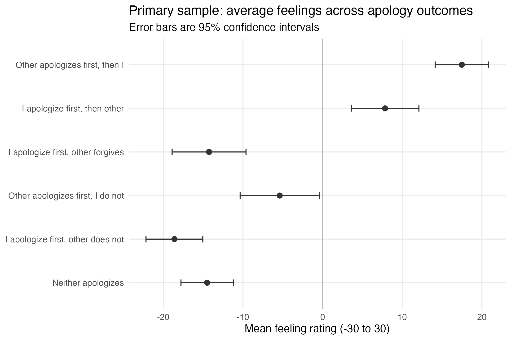
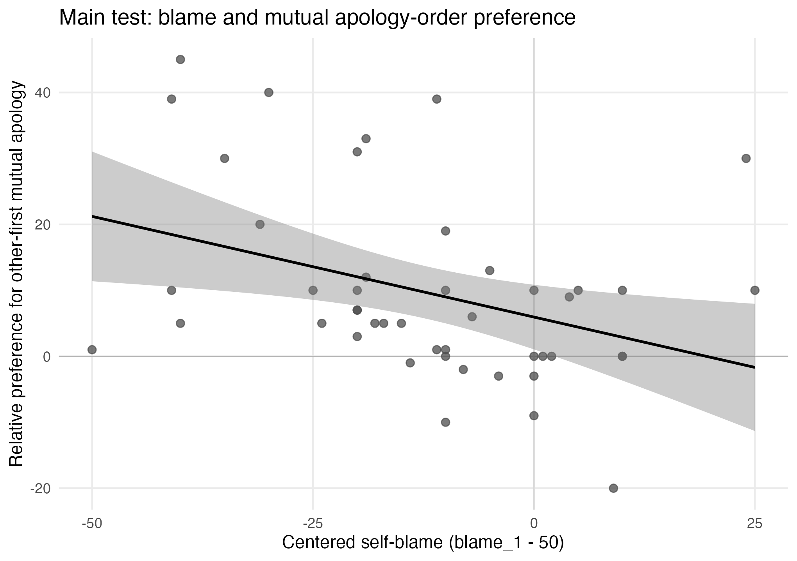

| Sample | N | Slope | SE | 95% CI | p | R^2 | Effect per 10 blame points |
|---|---|---|---|---|---|---|---|
| primary | 46 | -0.305 | 0.118 | [-0.542, -0.068] | 0.0128 | 0.133 | -3.053 |
Perceived Blame and Preferred Apology Order in Workplace Conflict
This report asks whether perceived blame in a workplace conflict is associated with preferences over apology order when both parties eventually apologize. The prediction is simple: as participants see themselves as more to blame, they should be less inclined to prefer the outcome in which the other person apologizes first and they apologize second, relative to the reverse order.
Participants rated six hypothetical apology outcomes after recalling or imagining a workplace conflict in which both sides were at least partly at fault. The main analyses use 46 respondents who completed the survey, passed the attention check, and had non-missing values for the focal variables. The key outcome ratings are within-respondent measures; blame attribution varies across respondents.
Results
Figure 1 shows a strong preference for reciprocal apology over unilateral or absent apology. The most favored outcome was the one in which the other person apologized first and the participant apologized second (M = 17.48, 95% CI [14.13, 20.82]). The corresponding self-first reciprocal outcome was also positive, but notably lower (M = 7.85, 95% CI [3.60, 12.09]). By contrast, no apology was rated negatively (M = -14.50), as were the one-sided outcomes in which the participant apologized without receiving an apology in return.

The within-person contrasts sharpen that pattern. The other-first reciprocal outcome was rated 9.63 points higher than the self-first reciprocal outcome, t(45) = 4.60, p < .001, d_z = 0.68. More broadly, the average of the two reciprocal outcomes exceeded the neither-apologizes outcome by 27.16 points, t(45) = 10.83, p < .001, d_z = 1.60. Reciprocal apology also outperformed the one-sided “I apologize and the other person forgives but does not apologize” outcome by 22.11 points, t(45) = 8.65, p < .001, d_z = 1.28.
The main test asks whether that within-reciprocal preference varies with blame attribution. It does. Centered self-blame was negatively associated with the relative preference for the other-first reciprocal outcome, b = -0.305, SE = 0.118, t = -2.59, p = .013, 95% CI [-0.542, -0.068], R2 = .133. On the observed scale, a 10-point increase in self-blame corresponded to about a 3-point reduction in preference for the other-first sequence.
The robustness checks point the same way. The strict sample, which excluded one clearly dubious case, produced virtually the same slope (b = -0.305, p = .014). A supporting directional binary-choice check was weaker but consistent: higher self-blame was associated with greater odds of choosing a self-first mutual-apology option over a neither-apologizes option (OR = 1.04, p = .079). Restricting the analysis to respondents describing real conflicts also yielded a negative coefficient, though with more uncertainty (p = .059). A Spearman check was similar in direction (rho = -0.395, p = .0066).

Figure 2 makes the central pattern easy to see. Respondents preferred reciprocal apology to unilateral or absent apology, and within reciprocal outcomes they generally preferred the other person to apologize first. That preference was not fixed: it became weaker as respondents attributed more blame to themselves.
A central limitation is that the study relies on recalled or imagined conflicts rather than a controlled experimental setting. Conflict severity, relationship history, hierarchy, and memory quality all vary across cases, so the results should be read as associational rather than causal. A stronger redesign would use a randomized vignette experiment that manipulates blame asymmetry and apology order while holding the conflict constant, then measures anticipated feelings, fairness, and willingness to reconcile.
Overall, the results are consistent with the proposed hypothesis. In these data, apology order within reciprocal resolution mattered, and its meaning shifted with perceived blame.
AI/tool use statement
AI/tool use statement. I used an LLM as a bounded assistant for repetitive and mechanical parts of the workflow, and for checking and editing. In particular, I used it to help summarize the survey instrument, map variables, draft initial R code for data cleaning and analysis, check for inconsistencies in tables and captions, and tighten the final prose. I did not use it to outsource the core research decisions. I independently chose the research question and main hypothesis, decided the sample-screening rules, defined the focal variables, ran and checked all code locally, verified key ranges and levels, and decided which results and robustness checks were substantively meaningful enough to report.
The key prompts/outputs I relied on were limited to a few parts of the process. First, I used the LLM to help translate the survey and task materials into a concrete workflow, including a variable map, likely repeated-measures structure, and a draft analysis plan. Second, I used it to generate first-pass R code for cleaning, reshaping, plotting, and regression, mainly to reduce repetitive coding time; I then ran, checked, and revised that code locally. Third, I used it as a second-pass reviewer to flag presentational issues, such as duplicated figure numbering, mixed statistical quantities in one robustness table, and wording that was too broad or too formulaic. Finally, I used it to tighten the writing and appendix language without changing the checked empirical results.
Appendix
A. Did you sanity-check ranges and missingness?
The key variables were checked against the survey instrument before analysis. All feeling ratings fell within the expected -30 to 30 range, and the blame slider fell within the expected 0 to 100 range. No focal feeling or blame variable contained out-of-range values. One demographic value was implausible: age was reported as 149 for a respondent who also wrote that they were clicking through the survey. That case was retained in the primary sample because age was not part of the main analysis, but excluded in the strict robustness sample.
Missingness was concentrated in incomplete surveys rather than scattered across completed responses. Of 61 raw responses, 47 were marked complete. One completed respondent failed the attention check, leaving 46 cases in the primary sample. The strict sample excluded one additional respondent with an implausible age and an explicit click-through comment, leaving 45 cases. Open-ended fields were often blank but were not required for the main analyses.
B. How did you confirm whether the structure was within- or between-subject?
The key outcome ratings were within-respondent measures. Each respondent rated all six apology outcomes, so the feeling ratings are repeated measures within person. Blame attribution and respondent characteristics varied across respondents. Display-order fields supported this interpretation: for complete cases, the first five outcome items appeared in a valid permutation order and the sixth item appeared in a fixed final position.
C. Did you need to verify the levels of any variables?
Yes. The attention check was reconstructed from the raw typed response rather than taken directly from the supplied pass/fail field. After trimming whitespace and standardizing capitalization, the expected response was “banana.” Among observed responses, the rebuilt indicator matched the supplied attention variable. Binary choice items were recoded from long text strings with Qualtrics placeholders into compact analysis labels.
D. Was there any missing data? If so, how did you deal with it?
Yes. Missingness was mostly due to survey dropout rather than item-level gaps in completed responses. Given the small sample and the concentration of missingness among unfinished surveys, the analysis used transparent screening and complete-case estimation rather than imputation. The main model used the primary sample of 46 respondents, and the stricter robustness check excluded one additional dubious case.
| Step | N | Dropped from previous step |
|---|---|---|
| Raw rows | 61 | 0 |
| Consent == AGREE | 61 | 0 |
| Finished == TRUE | 47 | 14 |
| Attention pass | 46 | 1 |
| Main vars observed | 46 | 0 |
| Primary sample | 46 | 0 |
| Strict sample | 45 | 1 |
The robustness checks were intentionally limited and are best read as supporting evidence rather than co-primary tests. Re-estimating the main model in the strict sample produced essentially the same coefficient. The supporting binary directional check was weaker and only marginal by conventional thresholds, and the Spearman correlation preserved the same negative direction. These checks do not all target the same estimand, so they are summarized here in prose rather than combined in a single table.
Code Appendix
Anonymous repository link: [insert anonymous repository link here]
The full cleaning and analysis scripts are included below to satisfy the submission requirement that code appear after the write-up and figures.
Data cleaning code
# Cleaning module for the Booth coding test.
# =========================
# Setup
# =========================
required_pkgs <- c("tidyverse", "readxl")
missing_pkgs <- setdiff(required_pkgs, rownames(installed.packages()))
if (length(missing_pkgs) > 0) {
stop("Please install: ", paste(missing_pkgs, collapse = ", "), call. = FALSE)
}
suppressPackageStartupMessages({
library(tidyverse)
library(readxl)
})
options(dplyr.summarise.inform = FALSE, scipen = 999)
# Simple name cleaner to avoid extra dependencies.
clean_names_simple <- function(x) {
out <- tolower(x)
out <- gsub("[^a-z0-9]+", "_", out)
out <- gsub("^_+|_+$", "", out)
out <- gsub("_+", "_", out)
out
}
to_bool <- function(x) {
if (is.logical(x)) return(x)
x <- tolower(trimws(as.character(x)))
case_when(
x %in% c("true", "1", "yes", "y", "finished", "complete") ~ TRUE,
x %in% c("false", "0", "no", "n", "unfinished", "incomplete") ~ FALSE,
TRUE ~ NA
)
}
first_present <- function(nm, candidates) {
hit <- intersect(candidates, nm)
if (length(hit) == 0) NA_character_ else hit[[1]]
}
# =========================
# Import workbook
# =========================
candidate_paths <- c(
file.path("data", "raw", "Data - Winter 2026.xlsx"),
file.path("Behavioral RP Recruiting Winter 26-selected", "Data - Winter 2026.xlsx"),
"Data - Winter 2026.xlsx"
)
workbook_path <- candidate_paths[file.exists(candidate_paths)][1]
if (length(workbook_path) == 0 || is.na(workbook_path)) {
stop("Could not locate the raw workbook. Update `candidate_paths`.", call. = FALSE)
}
sheet_names <- excel_sheets(workbook_path)
data_sheet <- sheet_names[str_detect(tolower(sheet_names), "^data$|response|raw")][1]
if (is.na(data_sheet)) data_sheet <- sheet_names[1]
codebook_sheet <- sheet_names[str_detect(tolower(sheet_names), "key|codebook|variable|meaning")][1]
raw_df <- read_excel(workbook_path, sheet = data_sheet)
names(raw_df) <- clean_names_simple(names(raw_df))
codebook_df <- tibble()
if (!is.na(codebook_sheet)) {
codebook_df <- read_excel(workbook_path, sheet = codebook_sheet)
names(codebook_df) <- clean_names_simple(names(codebook_df))
}
cat("Workbook:", workbook_path, "\n")
cat("Data sheet:", data_sheet, "\n")
cat("Rows x cols:", nrow(raw_df), "x", ncol(raw_df), "\n")
# =========================
# Identify key variables
# =========================
nm <- names(raw_df)
vars <- list(
response_id = first_present(nm, c("response_id", "responseid")),
consent = first_present(nm, c("consent")),
finished = first_present(nm, c("finished")),
progress = first_present(nm, c("progress")),
duration = first_present(nm, c("duration_in_seconds", "duration_seconds")),
passedattn = first_present(nm, c("passedattn")),
attention_text = first_present(nm, c("attention_3_text", "attention_text")),
real_imaginary = first_present(nm, c("real_imaginary")),
describe = first_present(nm, c("describe")),
comments = first_present(nm, c("comments")),
feelings_exp = first_present(nm, c("feelings_exp")),
f_youalone = first_present(nm, c("feelings_youalone")),
f_bothyoufirst = first_present(nm, c("feelings_bothyoufirst")),
f_themalone = first_present(nm, c("feelings_themalone")),
f_boththemfirst = first_present(nm, c("feelings_boththemfirst")),
f_neither = first_present(nm, c("feelings_neither")),
f_youaloneforgiven = first_present(nm, c("feelings_youaloneforgiven")),
outcome_binary1 = first_present(nm, c("outcome_binary1")),
outcome_binary2 = first_present(nm, c("outcome_binary2")),
blame = first_present(nm, c("blame_1", "blame")),
age = first_present(nm, c("age")),
sex = first_present(nm, c("sex")),
target_sex = first_present(nm, c("target_sex")),
do1 = first_present(nm, c("feelings_do_1")),
do2 = first_present(nm, c("feelings_do_2")),
do3 = first_present(nm, c("feelings_do_3")),
do4 = first_present(nm, c("feelings_do_4")),
do5 = first_present(nm, c("feelings_do_5")),
do6 = first_present(nm, c("feelings_do_6"))
)
required <- c("consent", "finished", "progress", "passedattn", "attention_text", "real_imaginary", "f_bothyoufirst", "f_boththemfirst", "blame")
missing_required <- required[map_lgl(vars[required], is.na)]
if (length(missing_required) > 0) {
stop("Missing key variable(s): ", paste(missing_required, collapse = ", "), call. = FALSE)
}
variable_map <- enframe(vars, name = "concept", value = "column_name")
# =========================
# Build standardized frame
# =========================
df <- raw_df |>
mutate(
respondent_id = if (!is.na(vars$response_id)) as.character(.data[[vars$response_id]]) else paste0("row_", row_number()),
consent = as.character(.data[[vars$consent]]),
finished = to_bool(.data[[vars$finished]]),
progress = suppressWarnings(as.numeric(.data[[vars$progress]])),
duration_sec = if (!is.na(vars$duration)) suppressWarnings(as.numeric(.data[[vars$duration]])) else NA_real_,
passedattn_raw = as.character(.data[[vars$passedattn]]),
attention_text_raw = as.character(.data[[vars$attention_text]]),
attention_text_std = str_to_lower(str_trim(attention_text_raw)),
real_imaginary = as.character(.data[[vars$real_imaginary]]),
describe = if (!is.na(vars$describe)) as.character(.data[[vars$describe]]) else NA_character_,
comments = if (!is.na(vars$comments)) as.character(.data[[vars$comments]]) else NA_character_,
feelings_exp = if (!is.na(vars$feelings_exp)) as.character(.data[[vars$feelings_exp]]) else NA_character_,
feelings_youalone = suppressWarnings(as.numeric(.data[[vars$f_youalone]])),
feelings_bothyoufirst = suppressWarnings(as.numeric(.data[[vars$f_bothyoufirst]])),
feelings_themalone = suppressWarnings(as.numeric(.data[[vars$f_themalone]])),
feelings_boththemfirst = suppressWarnings(as.numeric(.data[[vars$f_boththemfirst]])),
feelings_neither = suppressWarnings(as.numeric(.data[[vars$f_neither]])),
feelings_youaloneforgiven = suppressWarnings(as.numeric(.data[[vars$f_youaloneforgiven]])),
outcome_binary1 = as.character(.data[[vars$outcome_binary1]]),
outcome_binary2 = as.character(.data[[vars$outcome_binary2]]),
blame_1 = suppressWarnings(as.numeric(.data[[vars$blame]])),
age = if (!is.na(vars$age)) suppressWarnings(as.numeric(.data[[vars$age]])) else NA_real_,
sex = if (!is.na(vars$sex)) as.character(.data[[vars$sex]]) else NA_character_,
target_sex = if (!is.na(vars$target_sex)) as.character(.data[[vars$target_sex]]) else NA_character_,
feelings_do_1 = if (!is.na(vars$do1)) suppressWarnings(as.numeric(.data[[vars$do1]])) else NA_real_,
feelings_do_2 = if (!is.na(vars$do2)) suppressWarnings(as.numeric(.data[[vars$do2]])) else NA_real_,
feelings_do_3 = if (!is.na(vars$do3)) suppressWarnings(as.numeric(.data[[vars$do3]])) else NA_real_,
feelings_do_4 = if (!is.na(vars$do4)) suppressWarnings(as.numeric(.data[[vars$do4]])) else NA_real_,
feelings_do_5 = if (!is.na(vars$do5)) suppressWarnings(as.numeric(.data[[vars$do5]])) else NA_real_,
feelings_do_6 = if (!is.na(vars$do6)) suppressWarnings(as.numeric(.data[[vars$do6]])) else NA_real_
)
# =========================
# Audit ranges and levels
# =========================
range_audit <- tribble(
~var, ~expected_min, ~expected_max,
"feelings_youalone", -30, 30,
"feelings_bothyoufirst", -30, 30,
"feelings_themalone", -30, 30,
"feelings_boththemfirst", -30, 30,
"feelings_neither", -30, 30,
"feelings_youaloneforgiven", -30, 30,
"blame_1", 0, 100,
"age", 18, 100
) |>
rowwise() |>
mutate(
n_missing = sum(is.na(df[[var]])),
observed_min = suppressWarnings(min(df[[var]], na.rm = TRUE)),
observed_max = suppressWarnings(max(df[[var]], na.rm = TRUE)),
out_of_range_n = sum(!is.na(df[[var]]) & (df[[var]] < expected_min | df[[var]] > expected_max))
) |>
ungroup()
level_audit <- list(
consent = count(df, consent, sort = TRUE),
finished = count(df, finished, sort = TRUE),
passedattn_raw = count(df, passedattn_raw, sort = TRUE),
real_imaginary = count(df, real_imaginary, sort = TRUE),
outcome_binary1 = count(df, outcome_binary1, sort = TRUE),
outcome_binary2 = count(df, outcome_binary2, sort = TRUE),
attention_text_raw = count(df, attention_text_raw, sort = TRUE)
)
# =========================
# Verify attention check
# =========================
# Rebuild the attention flag from typed text before using the supplied pass/fail field.
df <- df |>
mutate(
attention_pass_rebuilt = attention_text_std == "banana",
attention_pass_supplied = case_when(
str_to_lower(str_trim(passedattn_raw)) %in% c("yes", "pass", "passed", "true", "1") ~ TRUE,
str_to_lower(str_trim(passedattn_raw)) %in% c("no", "fail", "failed", "false", "0") ~ FALSE,
TRUE ~ NA
),
attention_match = attention_pass_rebuilt == attention_pass_supplied,
attention_pass = attention_pass_rebuilt
)
attention_audit <- list(
discrepancy = count(df, attention_pass_rebuilt, attention_pass_supplied, attention_match, sort = TRUE),
mismatches = df |> filter(!is.na(attention_match), !attention_match) |>
select(respondent_id, attention_text_raw, passedattn_raw, attention_pass_rebuilt, attention_pass_supplied)
)
# =========================
# Quality flags and missingness
# =========================
# Keep flags separate from exclusions so sample construction stays readable.
df <- df |>
mutate(
flag_unfinished = !finished,
flag_attention_fail = !attention_pass,
flag_missing_main = is.na(blame_1) | is.na(feelings_bothyoufirst) | is.na(feelings_boththemfirst),
flag_age_implausible = !is.na(age) & (age < 18 | age > 100),
flag_clickthrough_comment = str_detect(str_to_lower(coalesce(comments, "")), "clicking through|don't use these data|dont use these data|just clicking")
)
missingness_summary <- df |>
summarise(across(
c(finished, progress, attention_pass, real_imaginary, blame_1,
feelings_bothyoufirst, feelings_boththemfirst, outcome_binary1, outcome_binary2,
age, describe, feelings_exp, comments),
~ sum(is.na(.x))
)) |>
pivot_longer(everything(), names_to = "variable", values_to = "n_missing") |>
mutate(pct_missing = 100 * n_missing / nrow(df)) |>
arrange(desc(pct_missing))
quality_flag_summary <- df |>
summarise(
n_unfinished = sum(flag_unfinished, na.rm = TRUE),
n_attention_fail = sum(flag_attention_fail, na.rm = TRUE),
n_missing_main = sum(flag_missing_main, na.rm = TRUE),
n_age_implausible = sum(flag_age_implausible, na.rm = TRUE),
n_clickthrough = sum(flag_clickthrough_comment, na.rm = TRUE)
)
# =========================
# Construct samples
# =========================
df <- df |>
mutate(
include_primary = consent == "AGREE" & finished & attention_pass & !flag_missing_main,
include_strict = include_primary & !flag_age_implausible & !flag_clickthrough_comment
)
sample_flow <- tibble(
step = c(
"Raw rows",
"Consent == AGREE",
"Finished == TRUE",
"Attention pass",
"Main vars observed",
"Primary sample",
"Strict sample"
),
n = c(
nrow(df),
sum(df$consent == "AGREE", na.rm = TRUE),
sum(df$consent == "AGREE" & df$finished, na.rm = TRUE),
sum(df$consent == "AGREE" & df$finished & df$attention_pass, na.rm = TRUE),
sum(df$consent == "AGREE" & df$finished & df$attention_pass & !df$flag_missing_main, na.rm = TRUE),
sum(df$include_primary, na.rm = TRUE),
sum(df$include_strict, na.rm = TRUE)
)
) |>
mutate(dropped_from_previous = lag(n, default = first(n)) - n)
# =========================
# Construct analysis variables
# =========================
df_clean <- df |>
mutate(
# Main planned moderator and outcome
self_blame_c = blame_1 - 50,
mutual_order_pref = feelings_boththemfirst - feelings_bothyoufirst,
# Supporting summaries
mutual_avg = (feelings_boththemfirst + feelings_bothyoufirst) / 2,
unilateral_avg = (feelings_youalone + feelings_themalone) / 2,
# Simple recodes used later in figures and checks
scenario_type = case_when(
str_detect(real_imaginary, regex("real argument/conflict", ignore_case = TRUE)) ~ "real",
str_detect(real_imaginary, regex("imagining myself", ignore_case = TRUE)) ~ "imagined",
TRUE ~ NA_character_
),
real_conflict = case_when(
scenario_type == "real" ~ 1,
scenario_type == "imagined" ~ 0,
TRUE ~ NA_real_
),
binary1_choice = case_when(
str_detect(outcome_binary1, regex("^i apologize first, then", ignore_case = TRUE)) ~ "self_first_mutual",
str_detect(outcome_binary1, regex("^neither i nor", ignore_case = TRUE)) ~ "neither",
TRUE ~ NA_character_
),
binary2_choice = case_when(
str_detect(outcome_binary2, regex("does not apologize after", ignore_case = TRUE)) ~ "self_only",
str_detect(outcome_binary2, regex("^neither i nor", ignore_case = TRUE)) ~ "neither",
TRUE ~ NA_character_
)
) |>
mutate(
scenario_type = factor(scenario_type, levels = c("real", "imagined")),
binary1_choice = factor(binary1_choice, levels = c("self_first_mutual", "neither")),
binary2_choice = factor(binary2_choice, levels = c("self_only", "neither"))
)
primary_sample <- df_clean |> filter(include_primary)
strict_sample <- df_clean |> filter(include_strict)
# =========================
# Long format for repeated outcomes
# =========================
# Long file for repeated-outcome plots and summaries.
outcome_lookup <- tribble(
~outcome_var, ~outcome_label, ~family, ~order_label,
"feelings_youalone", "I apologize first, other does not", "unilateral", "self_first",
"feelings_bothyoufirst", "I apologize first, then other apologizes", "mutual", "self_first",
"feelings_themalone", "Other apologizes first, I do not", "unilateral", "other_first",
"feelings_boththemfirst", "Other apologizes first, then I apologize", "mutual", "other_first",
"feelings_neither", "Neither apologizes", "neither", "none",
"feelings_youaloneforgiven", "I apologize first, other forgives (no apology)", "forgiven_only", "self_first"
)
feelings_long <- df_clean |>
select(
respondent_id, include_primary, include_strict,
self_blame_c, blame_1, scenario_type, real_conflict,
all_of(outcome_lookup$outcome_var)
) |>
pivot_longer(
cols = all_of(outcome_lookup$outcome_var),
names_to = "outcome_var",
values_to = "feeling_score"
) |>
left_join(outcome_lookup, by = "outcome_var")
# Small check used in the appendix write-up.
within_subject_check <- list(
n_rows = nrow(df_clean),
n_with_all_6_feelings = sum(rowSums(is.na(df_clean[, outcome_lookup$outcome_var])) == 0),
do_1_5_permutation_ok = {
do_df <- df_clean |>
filter(!is.na(feelings_do_1), !is.na(feelings_do_2), !is.na(feelings_do_3), !is.na(feelings_do_4), !is.na(feelings_do_5))
do_vals <- as.matrix(do_df[, c("feelings_do_1", "feelings_do_2", "feelings_do_3", "feelings_do_4", "feelings_do_5")])
ok <- apply(do_vals, 1, function(x) all(sort(x) == 1:5))
tibble(n_ok = sum(ok), n_checked = length(ok))
}
)
# =========================
# Export essentials
# =========================
dir.create(file.path("data", "derived"), recursive = TRUE, showWarnings = FALSE)
dir.create(file.path("output", "tables"), recursive = TRUE, showWarnings = FALSE)
write_csv(df_clean, file.path("data", "derived", "clean_respondent_level.csv"))
write_csv(primary_sample, file.path("data", "derived", "clean_primary_sample.csv"))
write_csv(strict_sample, file.path("data", "derived", "clean_strict_sample.csv"))
write_csv(feelings_long, file.path("data", "derived", "clean_feelings_long.csv"))
write_csv(sample_flow, file.path("output", "tables", "sample_flow.csv"))
# Save compact audit objects for the appendix and report.
audit_objects <- list(
variable_map = variable_map,
range_audit = range_audit,
level_audit = level_audit,
attention_audit = attention_audit,
missingness_summary = missingness_summary,
quality_flag_summary = quality_flag_summary,
sample_flow = sample_flow,
within_subject_check = within_subject_check
)
saveRDS(audit_objects, file.path("data", "derived", "cleaning_audit_objects.rds"))
cat("\nCleaning module finished.\n")
cat("Primary N:", nrow(primary_sample), "| Strict N:", nrow(strict_sample), "\n")Main analysis code
# Main analysis module for the Booth coding test.
# =========================
# Setup
# =========================
required_pkgs <- c("tidyverse", "broom", "scales")
missing_pkgs <- setdiff(required_pkgs, rownames(installed.packages()))
if (length(missing_pkgs) > 0) {
stop("Please install: ", paste(missing_pkgs, collapse = ", "), call. = FALSE)
}
suppressPackageStartupMessages({
library(tidyverse)
library(broom)
library(scales)
})
options(dplyr.summarise.inform = FALSE, scipen = 999)
dir.create(file.path("output", "figures"), recursive = TRUE, showWarnings = FALSE)
dir.create(file.path("output", "tables"), recursive = TRUE, showWarnings = FALSE)
dir.create(file.path("data", "derived"), recursive = TRUE, showWarnings = FALSE)
# =========================
# 1) Load cleaned data
# =========================
paths <- list(
respondent = file.path("data", "derived", "clean_respondent_level.csv"),
primary = file.path("data", "derived", "clean_primary_sample.csv"),
strict = file.path("data", "derived", "clean_strict_sample.csv"),
long = file.path("data", "derived", "clean_feelings_long.csv"),
audit = file.path("data", "derived", "cleaning_audit_objects.rds")
)
missing_files <- names(paths)[!file.exists(unlist(paths))]
if (length(missing_files) > 0) {
stop("Missing cleaned file(s): ", paste(missing_files, collapse = ", "), call. = FALSE)
}
respondent_all <- readr::read_csv(paths$respondent, show_col_types = FALSE)
primary <- readr::read_csv(paths$primary, show_col_types = FALSE)
strict <- readr::read_csv(paths$strict, show_col_types = FALSE)
feelings_long <- readr::read_csv(paths$long, show_col_types = FALSE)
audit_objects <- readRDS(paths$audit)
core_required_vars <- c(
"self_blame_c", "mutual_order_pref", "mutual_avg", "unilateral_avg",
"feelings_neither", "feelings_youalone", "feelings_themalone",
"feelings_youaloneforgiven", "feelings_bothyoufirst", "feelings_boththemfirst"
)
missing_core <- setdiff(core_required_vars, names(primary))
if (length(missing_core) > 0) {
stop("Primary file is missing core analysis variables: ", paste(missing_core, collapse = ", "), call. = FALSE)
}
optional_vars <- c("binary1_choice", "binary2_choice", "scenario_type", "real_conflict")
missing_optional <- setdiff(optional_vars, names(primary))
if (length(missing_optional) > 0) {
message("Optional variable(s) not found; related checks will be skipped: ",
paste(missing_optional, collapse = ", "))
}
# =========================
# 2) Descriptive backbone
# =========================
# Start with the within-person outcome profile before moving to the blame slope.
continuous_vars <- c(
"blame_1", "self_blame_c", "mutual_order_pref", "mutual_avg", "unilateral_avg",
"feelings_neither", "feelings_youalone", "feelings_themalone",
"feelings_youaloneforgiven", "feelings_bothyoufirst", "feelings_boththemfirst"
)
descriptive_summary <- primary %>%
summarise(across(all_of(continuous_vars), list(
n = ~sum(!is.na(.x)),
mean = ~mean(.x, na.rm = TRUE),
sd = ~sd(.x, na.rm = TRUE),
median = ~median(.x, na.rm = TRUE),
min = ~min(.x, na.rm = TRUE),
max = ~max(.x, na.rm = TRUE)
))) %>%
pivot_longer(
everything(),
names_to = c("variable", ".value"),
names_pattern = "^(.*)_(n|mean|sd|median|min|max)$"
) %>%
arrange(match(variable, continuous_vars))
outcome_order <- c(
"feelings_neither",
"feelings_youalone",
"feelings_themalone",
"feelings_youaloneforgiven",
"feelings_bothyoufirst",
"feelings_boththemfirst"
)
outcome_labels <- c(
feelings_neither = "Neither apologizes",
feelings_youalone = "I apologize first, other does not",
feelings_themalone = "Other apologizes first, I do not",
feelings_youaloneforgiven = "I apologize first, other forgives",
feelings_bothyoufirst = "I apologize first, then other",
feelings_boththemfirst = "Other apologizes first, then I"
)
desc_outcomes <- primary %>%
select(all_of(outcome_order)) %>%
pivot_longer(everything(), names_to = "outcome_var", values_to = "feeling") %>%
group_by(outcome_var) %>%
summarise(
n = sum(!is.na(feeling)),
mean = mean(feeling, na.rm = TRUE),
sd = sd(feeling, na.rm = TRUE),
se = sd / sqrt(n),
ci_low = mean - qt(0.975, pmax(n - 1, 1)) * se,
ci_high = mean + qt(0.975, pmax(n - 1, 1)) * se,
.groups = "drop"
) %>%
mutate(
outcome_var = factor(outcome_var, levels = outcome_order),
outcome_label = factor(outcome_labels[as.character(outcome_var)], levels = outcome_labels[outcome_order])
)
fig_descriptive <- ggplot(desc_outcomes, aes(x = outcome_label, y = mean)) +
geom_hline(yintercept = 0, linewidth = 0.3, color = "grey70") +
geom_point(size = 2.2, color = "grey20") +
geom_errorbar(aes(ymin = ci_low, ymax = ci_high), width = 0.15, color = "grey20") +
coord_flip() +
labs(
x = NULL,
y = "Mean feeling rating (-30 to 30)",
title = "Primary sample: average feelings across apology outcomes",
subtitle = "Error bars are 95% confidence intervals"
) +
theme_minimal(base_size = 11) +
theme(panel.grid.minor = element_blank())
# =========================
# 3) Focused paired contrasts
# =========================
# Keep the paired contrasts narrow.
paired_contrast <- function(data, x, y, x_label, y_label) {
dat <- data %>% select(x = all_of(x), y = all_of(y)) %>% drop_na()
if (nrow(dat) < 2) {
return(tibble(
contrast_label = paste0(x_label, " — minus — ", y_label),
first_var = x,
second_var = y,
first_label = x_label,
second_label = y_label,
n = nrow(dat),
first_mean = NA_real_,
second_mean = NA_real_,
mean_diff_first_minus_second = NA_real_,
ci_low_diff = NA_real_,
ci_high_diff = NA_real_,
t_statistic = NA_real_,
df = NA_real_,
p_value = NA_real_,
dz_first_minus_second = NA_real_
))
}
diff <- dat$x - dat$y
tt <- t.test(dat$x, dat$y, paired = TRUE)
tibble(
contrast_label = paste0(x_label, " — minus — ", y_label),
first_var = x,
second_var = y,
first_label = x_label,
second_label = y_label,
n = nrow(dat),
first_mean = mean(dat$x),
second_mean = mean(dat$y),
mean_diff_first_minus_second = mean(diff),
ci_low_diff = unname(tt$conf.int[1]),
ci_high_diff = unname(tt$conf.int[2]),
t_statistic = unname(tt$statistic),
df = unname(tt$parameter),
p_value = tt$p.value,
dz_first_minus_second = ifelse(sd(diff) == 0, NA_real_, mean(diff) / sd(diff))
)
}
paired_results <- bind_rows(
paired_contrast(
primary,
"feelings_boththemfirst",
"feelings_bothyoufirst",
"Other apologizes first, then self",
"Self apologizes first, then other"
),
paired_contrast(
primary,
"mutual_avg",
"feelings_neither",
"Average mutual apology rating",
"Neither apologizes"
),
paired_contrast(
primary,
"feelings_bothyoufirst",
"feelings_youaloneforgiven",
"Self apologizes first, then other",
"Self apologizes, other forgives (no apology)"
)
)
# =========================
# 4) Main hypothesis test
# =========================
main_formula <- mutual_order_pref ~ self_blame_c
mod_primary <- lm(main_formula, data = primary)
main_glance <- broom::glance(mod_primary)
main_term <- broom::tidy(mod_primary, conf.int = TRUE) %>%
filter(term == "self_blame_c") %>%
mutate(
sample = "primary",
n = nobs(mod_primary),
r_squared = main_glance$r.squared,
adj_r_squared = main_glance$adj.r.squared,
slope_per_10_blame_points = estimate * 10,
std_beta = estimate * sd(primary$self_blame_c, na.rm = TRUE) / sd(primary$mutual_order_pref, na.rm = TRUE)
)
main_regression_summary <- main_term %>%
transmute(
sample, n,
slope = estimate,
se = std.error,
t = statistic,
p = p.value,
ci_low = conf.low,
ci_high = conf.high,
r_squared,
adj_r_squared,
std_beta,
effect_per_10_blame_points = slope_per_10_blame_points
)
fig_main <- ggplot(primary, aes(x = self_blame_c, y = mutual_order_pref)) +
geom_hline(yintercept = 0, linewidth = 0.3, color = "grey70") +
geom_vline(xintercept = 0, linewidth = 0.3, color = "grey80") +
geom_point(alpha = 0.75, size = 2, color = "grey30") +
geom_smooth(method = "lm", se = TRUE, linewidth = 0.8, color = "black", fill = alpha("grey50", 0.2)) +
labs(
x = "Centered self-blame (blame_1 - 50)",
y = "Relative preference for other-first mutual apology",
title = "Main test: blame and mutual apology-order preference"
) +
theme_minimal(base_size = 11) +
theme(panel.grid.minor = element_blank())
# =========================
# 5) Robustness checks
# =========================
# Use the strict sample as a check, not the headline analysis.
mod_strict <- lm(main_formula, data = strict)
strict_term <- broom::tidy(mod_strict, conf.int = TRUE) %>%
filter(term == "self_blame_c") %>%
mutate(
sample = "strict",
n = nobs(mod_strict),
r_squared = broom::glance(mod_strict)$r.squared,
adj_r_squared = broom::glance(mod_strict)$adj.r.squared,
slope_per_10_blame_points = estimate * 10
)
main_vs_strict <- bind_rows(main_term, strict_term) %>%
transmute(
sample, n,
slope = estimate,
se = std.error,
t = statistic,
p = p.value,
ci_low = conf.low,
ci_high = conf.high,
r_squared,
effect_per_10_blame_points = slope_per_10_blame_points
)
# Supporting directional check, not a second main test.
binary_directional_note <- tibble(
note = "Supporting directional check: binary1 choice (self-first mutual vs neither), not the main mutual-order contrast."
)
binary_directional_check <- tibble()
if ("binary1_choice" %in% names(primary)) {
binary_validation_data <- primary %>%
filter(binary1_choice %in% c("self_first_mutual", "neither")) %>%
mutate(binary1_self_first = if_else(binary1_choice == "self_first_mutual", 1, 0))
if (nrow(binary_validation_data) >= 10 && n_distinct(binary_validation_data$binary1_self_first) == 2) {
mod_binary <- glm(binary1_self_first ~ self_blame_c, data = binary_validation_data, family = binomial())
b <- broom::tidy(mod_binary) %>% filter(term == "self_blame_c")
binary_directional_check <- b %>%
mutate(
n = nobs(mod_binary),
odds_ratio = exp(estimate),
conf.low = estimate - 1.96 * std.error,
conf.high = estimate + 1.96 * std.error,
or_conf.low = exp(conf.low),
or_conf.high = exp(conf.high)
) %>%
transmute(
term, n,
logit_slope = estimate,
se = std.error,
z = statistic,
p = p.value,
odds_ratio,
or_ci_low = or_conf.low,
or_ci_high = or_conf.high
)
} else {
message("Skipping binary directional check: insufficient usable variation in binary1_choice.")
}
} else {
message("Skipping binary directional check: binary1_choice is not available.")
}
# Optional subgroup check: real conflicts only.
real_subgroup <- tibble()
if ("scenario_type" %in% names(primary)) {
primary_real <- primary %>% filter(scenario_type == "real")
if (nrow(primary_real) >= 20) {
mod_real <- lm(main_formula, data = primary_real)
real_subgroup <- broom::tidy(mod_real, conf.int = TRUE) %>%
filter(term == "self_blame_c") %>%
mutate(
sample = "primary_real_only",
n = nobs(mod_real),
r_squared = broom::glance(mod_real)$r.squared,
slope_per_10_blame_points = estimate * 10
) %>%
transmute(
sample, n,
slope = estimate,
se = std.error,
t = statistic,
p = p.value,
ci_low = conf.low,
ci_high = conf.high,
r_squared,
effect_per_10_blame_points = slope_per_10_blame_points
)
}
} else {
message("Skipping real-conflict subgroup check: scenario_type is not available.")
}
# Optional nonparametric check.
spearman_check <- primary %>%
select(self_blame_c, mutual_order_pref) %>%
drop_na() %>%
summarise(
n = n(),
rho = suppressWarnings(cor(self_blame_c, mutual_order_pref, method = "spearman")),
p = suppressWarnings(cor.test(self_blame_c, mutual_order_pref, method = "spearman", exact = FALSE)$p.value)
)
# =========================
# 6) Save compact result objects
# =========================
result_tables <- list(
descriptive_summary = descriptive_summary,
desc_outcomes = desc_outcomes,
paired_results = paired_results,
main_model = main_regression_summary,
main_vs_strict = main_vs_strict,
binary_directional_check = binary_directional_check,
binary_directional_note = binary_directional_note,
real_subgroup = real_subgroup,
spearman_check = spearman_check,
sample_flow_from_cleaning = audit_objects$sample_flow
)
analysis_objects <- list(
data_info = list(
n_all = nrow(respondent_all),
n_primary = nrow(primary),
n_strict = nrow(strict)
),
tables = result_tables,
models = list(
mod_primary = mod_primary,
mod_strict = mod_strict
),
figures = list(
fig_descriptive = fig_descriptive,
fig_main = fig_main
)
)
# =========================
# 7) Save key outputs
# =========================
ggsave(
filename = file.path("output", "figures", "figure_01_primary_outcome_profile.png"),
plot = fig_descriptive,
width = 7.2, height = 4.8, dpi = 300
)
ggsave(
filename = file.path("output", "figures", "figure_02_main_blame_mutual_order.png"),
plot = fig_main,
width = 6.8, height = 4.8, dpi = 300
)
readr::write_csv(descriptive_summary, file.path("output", "tables", "table_descriptive_summary_primary.csv"))
readr::write_csv(desc_outcomes, file.path("output", "tables", "table_outcome_profile_primary.csv"))
readr::write_csv(paired_results, file.path("output", "tables", "table_paired_contrasts_primary.csv"))
readr::write_csv(main_regression_summary, file.path("output", "tables", "table_main_regression_primary.csv"))
readr::write_csv(main_vs_strict, file.path("output", "tables", "table_main_vs_strict_slope.csv"))
if (nrow(binary_directional_check) > 0) {
readr::write_csv(binary_directional_check, file.path("output", "tables", "table_binary_directional_check.csv"))
}
if (nrow(real_subgroup) > 0) {
readr::write_csv(real_subgroup, file.path("output", "tables", "table_real_conflict_subgroup_check.csv"))
}
readr::write_csv(spearman_check, file.path("output", "tables", "table_spearman_check.csv"))
saveRDS(analysis_objects, file.path("data", "derived", "analysis_results_objects.rds"))
cat("\nAnalysis module finished.\n")
cat("Primary N:", nrow(primary), "| Strict N:", nrow(strict), "\n")